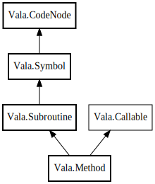

Method
Object Hierarchy:

Description:
public class Method :
Subroutine,
Callable
Represents a type or namespace method.
Content:
Properties:
- public Method base_interface_method { get; }
Specifies the abstract interface method this method implements.
- public DataType base_interface_type { get; set; }
Specifies the explicit interface containing the method this method
implements.
- public Method base_method { get; }
Specifies the virtual or abstract method this method overrides.
Reference must be weak as virtual and abstract methods set base_method to themselves.
- public MemberBinding binding { get; set; }
Specifies whether this method may only be called with an instance of
the contained type.
- public bool closure { get; set; }
- public bool coroutine { get; set; }
- public bool entry_point { get; private set; }
- public bool has_construct_function { get; set; }
Specifies whether a construct function with a GType parameter is
available. This is only applicable to creation methods.
- public override bool has_result { get; }
- public bool is_abstract { get; set; }
Specifies whether this method is abstract. Abstract methods have no
body, may only be specified within abstract classes, and must be overriden by derived non-abstract classes.
- public bool is_async_callback { get; set; }
- public bool is_inline { get; set; }
Specifies whether this method should be inlined.
- public bool is_virtual { get; set; }
Specifies whether this method is virtual. Virtual methods may be
overridden by derived classes.
- public bool overrides { get; set; }
Specifies whether this method overrides a virtual or abstract method
of a base type.
- public bool printf_format { get; set; }
Specifies whether this method expects printf-style format arguments.
- public DataType return_type { get; set; }
The return type of this method.
- public bool returns_floating_reference { get; set; }
- public bool returns_modified_pointer { get; set; }
- public bool scanf_format { get; set; }
Specifies whether this method expects scanf-style format arguments.
- public weak Signal signal_reference { get; set; }
- public Parameter this_parameter { get; set; }
Specifies the generated `this` parameter for instance methods.
Creation methods:
Methods:
Fields:
Inherited Members:
All known members inherited from class Vala.Subroutine
All known members inherited from class Vala.Symbol
All known members inherited from class Vala.CodeNode
All known members inherited from interface Vala.Callable